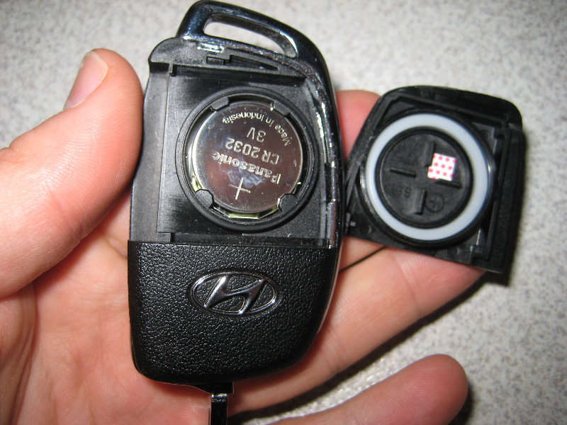

Заміна батарейки в ключі авто в Ужгороді — від 100 грн

Замінюємо батарейки в ключах усіх типів: звичайних з пультом, викидних, smart-key, ключах-картках Renault, дисплейних ключах BMW. Маємо у наявності всі популярні типи елементів живлення: CR2032, CR2025, CR1632, CR1620, CR2450. Робота займає 2–5 хвилин, корпус ключа залишається без подряпин — використовуємо спеціальні інструменти, а не викрутку.
Сіла батарейка в ключі?
Заїжджайте — поміняємо за 5 хвилин без запису
Як зрозуміти, що батарейка сіла
- Пульт працює лише впритул до авто (1-2 метри замість звичних 10-20)
- Кнопки спрацьовують не з першого разу або через раз
- На приладовій панелі загоряється індикатор «Key Battery Low» або «Replace Key Battery»
- Smart-key не реагує на наближення — доводиться класти його на кнопку Start
- Світлодіод на ключі при натисканні горить тьмяно або не горить взагалі
Ціни на заміну батарейки
| Послуга | Ціна | Час |
|---|---|---|
| Заміна батарейки CR2032 / CR2025 в звичайному ключі | від 100 грн | 2 хв |
| Заміна батарейки у викидному ключі | від 120 грн | 3 хв |
| Заміна батарейки в smart-key (без розбору) | від 150 грн | 3 хв |
| Заміна батарейки в дисплейному ключі BMW | від 250 грн | 5 хв |
| Заміна батарейки в ключ-картці Renault | від 200 грн | 5 хв |
| Чистка контактів у відсіку батарейки | від 100 грн | 5 хв |
Які батарейки використовуються в авто-ключах
- CR2032 (3V) — найпопулярніша, стоїть у 70% всіх ключів: VW, Audi, Skoda, BMW, Mercedes, Ford, Hyundai, Kia
- CR2025 (3V) — тонша версія, Toyota, Mazda, Honda (старіші моделі)
- CR1632 (3V) — Toyota smart-key, Lexus
- CR1620 (3V) — деякі старі smart-key
- CR2450 (3V) — Mercedes-Benz smart-key, BMW дисплейний ключ
- CR2016 (3V) — деякі китайські авто, старі Hyundai
Чому варто звернутися до майстра
- Корпус ключа з пластику з тонкими защіпками — без досвіду легко зламати
- Гумова прокладка має бути правильно вкладена, інакше волога потрапить всередину
- Деякі smart-key (Renault карта, BMW Display Key) розбираються нестандартно
- Можемо одразу почистити контакти і перевірити радіопульт
- Якщо проблема не в батарейці — побачимо це і підкажемо
Часті запитання
Як зрозуміти що батарейка в ключі сіла?
Перші ознаки: пульт працює тільки впритул до авто (1-2 метри замість 10-20), кнопки спрацьовують не з першого разу, на smart-key загоряється індикатор «низький заряд» на приладовій панелі.
Яка батарейка стоїть у моєму ключі?
Найчастіше — CR2032 (3V, найпопулярніша). Також зустрічаються CR2025 (тонша), CR1632 (Toyota smart-key), CR1620 (старі smart-key), CR2450 (деякі BMW).
Чи зіб'ється прив'язка ключа якщо вийняти батарейку?
Ні. Прив'язка зберігається в чіпі ключа, який працює без батарейки. Батарейка живить лише радіопульт. Smart-key без батарейки теж можна використовувати — піднести до кнопки старту, вона зчитає чіп пасивно.
Скільки служить нова батарейка в ключі?
Якісна CR2032 — 2-3 роки в звичайному ключі, 1-2 роки в smart-key (більше витрачає на постійний обмін з авто).
Чому пульт перестав працювати а батарейка нова?
Можливі причини: окислились контакти, тріснула плата всередині, виник збій прошивки ключа, проблема не в ключі а в авто (приймач). Привозьте — продіагностуємо.
Не впевнені який тип у вас?
Зателефонуйте і назвіть марку та модель — підкажемо